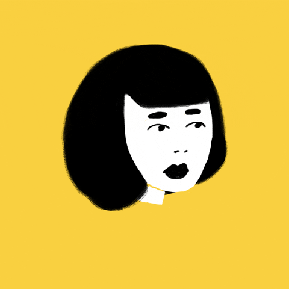

Convocatoria 2022
La Bienal de Arte Joven de la UNL
La Bienal de Arte Joven de la UNL nació hace 26 años, co-creada a partir del esfuerzo mancomunado de la FUL (Federación Universitaria del Litoral) y la UNL (Universidad Nacional del Litoral). Desde aquel entonces, este importante evento viene reuniendo voces, visiones y expresiones de los nóveles creadores emergentes de la ciudad y la región con el fin de convertir sus producciones y propuestas en bienes públicos y sociales.
Pensada como territorio para la utopía, es también un lugar de encuentro, reflexión y discusión para acercarnos, conocernos y reconocernos en nuestra identidad cultural.

La Bienal de Arte Joven de la UNL nació hace 26 años, co-creada a partir del esfuerzo mancomunado de la FUL (Federación Universitaria del Litoral) y la UNL (Universidad Nacional del Litoral). Desde aquel entonces, este importante evento viene reuniendo voces, visiones y expresiones de los nóveles creadores emergentes de la ciudad y la región con el fin de convertir sus producciones y propuestas en bienes públicos y sociales.
Pensada como territorio para la utopía, es también un lugar de encuentro, reflexión y discusión para acercarnos, conocernos y reconocernos en nuestra identidad cultural.
Actualidad Bienal
Desde la Dirección de Extensión Cultural, a través del programa Bienal de Arte Joven posibilitamos a los artistas emergentes disponer de una plataforma de exhibición, formación y producción. Un modo de socializar las experiencias creativas en un ámbito de diálogo cómplice entre pares y público, a la vez que reivindica el rol de la Universidad en torno al debate de las nuevas corrientes estéticas y el estado del arte actual en la región. Y, en esta edición en particular, pretendemos ser receptivos con las nuevas propuestas, tendencias y prácticas artísticas y culturales. La globalización como fenómeno mundial y el progreso de la tecnología digital han cambiado la concepción de mundo que se tenía. Las viejas estructuras se caen, los antiguos relatos ya no encuentran sustento, las dinámicas sociales cambian constantemente y todo lo que antes fue rígido se desvanece.
La cultura y las artes en general, no son ajenas a estos procesos, quedando caducas las antiguas estructuras y clasificaciones. Las nociones de campos, estilos, técnicas y procedimientos no son exhaustivas, ya que excluyen dentro de sí aquellos productos que no caben dentro de la vieja taxonomía de clasificaciones. En búsqueda de ser abiertos e inclusivos ponderamos la versatilidad del arte que se agiorna, donde los bordes de se diluyen, se solapan, se mezclan, se integran y se desdibujan, valorando su capacidad para producir nuevos significados y representaciones de acuerdo a estos tiempos que corren. Teniendo en cuenta las circunstancias que han cambiado totalmente la vida cotidiana de las personas, los jóvenes y los ámbitos culturales en esta nueva edición la tecnología y la virtualidad serán clave para la producción y percepción de obras artísticas.
Como pensamos hacemos
La Bienal sale a la calle: toda política cultural pública que se considere innovadora e integral, debe incorporar la voz de la comunidad, dotándola de posibilidades para ejercer su derecho a la participación en las prácticas culturales. La tecnología ha cambiado nuestra forma de relacionarnos con el «otro». Los nuevos hábitos sociales dinamizan el panorama dotándolo de una heterogeneidad nunca antes vista. La individualización tecnológica es la consecuencia negativa de estos progresos, por lo que proponemos algunas iniciativas que recuperen la esencia de lo tangible y el encuentro, ponderando la proximidad social versus el exceso tecnológico. Por esta razón, somos conscientes que los procesos contributivos y de gestión participativa están entre los más efectivos para generar, reforzar y estimular vínculos que se darán con distintos niveles de influencia territorial, coordinando estratégicamente con otros actores sociales y políticos.
En esta forma de hacer cultura se pondera la relación entre experiencia artística, académica y tecnológica. Esta tríada funcionará como base y sus tres ejes pretenden relacionarse de forma que puedan configurar una experiencia cultural renovadora e integral. En igual sentido, se reformula la relación y el alcance de La Bienal a nivel nacional e incluyendo a los países que integran la Red de Universidades Públicas AUGM.